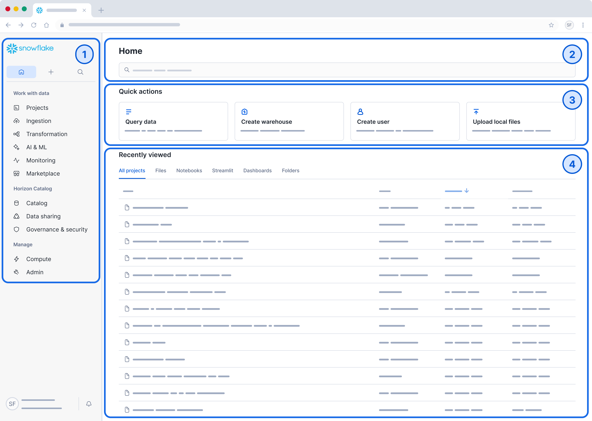
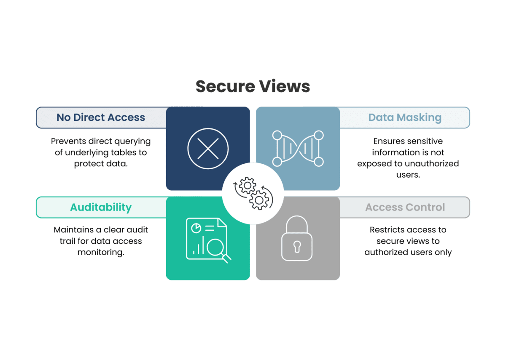
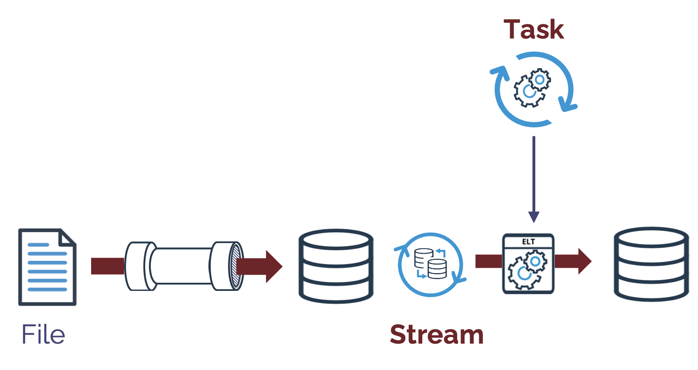
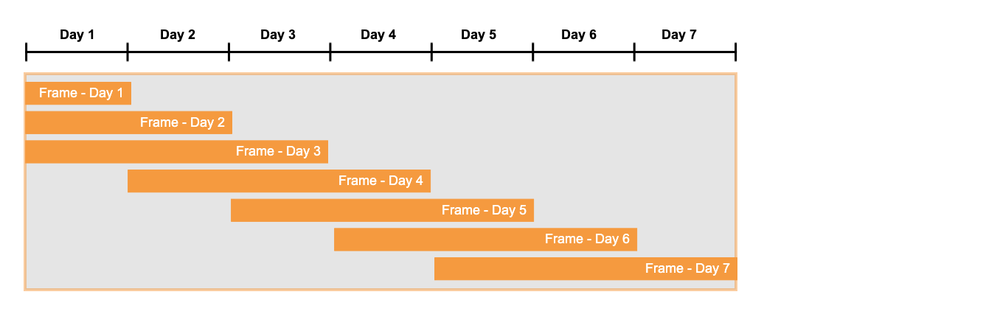
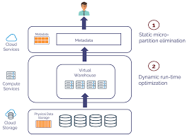

Understanding Snowflake as a Financial Data Foundation
Snowflake is best understood as a structured platform for organizing, transforming, and delivering financial data at scale. Rather than serving as a front-end reporting layer, it functions as a centralized environment where raw data can be stored, modeled, standardized, and prepared for downstream analysis. This makes it especially valuable for accounting and finance teams working across large transaction volumes, multiple entities, and increasingly automated reporting demands.
In modern financial environments, spreadsheet-based processing alone often becomes difficult to maintain as data volume, complexity, and reporting expectations increase. Snowflake helps solve this problem by enabling teams to separate raw source data from reporting logic, automate recurring transformations, and create dependable data structures that can support dashboards, reconciliations, period reporting, and analytical review. When implemented correctly, it becomes a stable foundation rather than just another storage location.
The sections below focus on some of the most practical Snowflake concepts for finance and accounting modernization. Each topic is presented as a reference-oriented framework that can be adapted to real business data while preserving control, scalability, and clarity.
Getting Started: Where to Run SQL in Snowflake
Before working through the examples below, you’ll need to access Snowflake’s SQL workspace and configure your environment correctly. That includes selecting the correct database, schema, and warehouse so that your queries execute against the proper data and compute layer.
Step-by-Step Navigation
- Log into your Snowflake account.
- From the main dashboard, navigate to Worksheets.
- Click “+ Worksheet” to open a new SQL editor.
- In the top toolbar, select the appropriate environment settings:
- Database → where your data is stored.
- Schema → your working layer or object grouping.
- Warehouse → the compute engine required to run your queries.
- Paste your SQL code into the editor.
- Click Run to execute.
Before You Begin: Adapting Your Data
All examples in this guide use placeholder names. You’ll need to map them to your actual data structure. Think of each example as a framework: the logic remains consistent, but the object names and field names should be adjusted to match your source systems and reporting model.
| Placeholder | Replace With |
|---|---|
raw_gl_data |
Your source table (ERP export, AP transactions, or other detailed financial feed) |
amount |
Transaction value field or journal line amount column |
account_id |
GL account number or account identifier |
date |
Posting date, transaction date, or accounting period reference |

1. Build a Finance-Specific Data Model (Star Schema)
Why It Matters
Raw general ledger and transaction-level data are rarely structured for direct analysis. By separating data into a fact table for transactional activity and dimension tables for accounts, vendors, entities, periods, or departments, you create a cleaner analytical model that is easier to query, maintain, and scale. This structure improves consistency across reporting while reducing repeated transformation work.
A strong data model also helps finance teams avoid embedding reporting logic directly into every query. Instead, the model itself becomes the foundation for repeatable reporting, dashboard development, reconciliations, and performance analysis. This improves both efficiency and control because users are working from a standardized structure rather than inventing a new approach each time data is needed.
In practice, this means Snowflake can serve as a durable reporting layer for downstream tools such as Tableau, Power BI, or internally developed analytics workflows. The better the underlying model, the more reliable the outputs become.
Key Snowflake Features
- Tables
- Views
The Template Code
-- Create a centralized transaction (fact) table
CREATE TABLE fact_gl_transactions AS
SELECT * FROM raw_gl_data;
-- Create a dimension table for accounts
CREATE TABLE dim_account AS
SELECT DISTINCT account_id, account_name FROM raw_gl_data;
-- Build a clean reporting view
CREATE VIEW vw_financials AS
SELECT
f.amount,
d.account_name,
f.date
FROM fact_gl_transactions f
JOIN dim_account d
ON f.account_id = d.account_id;How to Customize This
- Identify Your Source Table: Replace
raw_gl_datawith your actual dataset. - Map Your Columns:
amount→transaction_amount,journal_line_amountaccount_id→gl_account_numberdate→posting_date
- Expand for Reporting Needs: Join additional dimensions such as
department_id,cost_center, orvendor_id.
See It In Action
CREATE OR REPLACE TABLE fact_gl_transactions AS
SELECT
posting_date AS transaction_date,
gl_account_number AS account_id,
debit_credit_net AS net_amount,
'QUICKBOOKS' AS source
FROM raw_quickbooks_export;Additional Resources & Reference Links

2. Use Views as Your Presentation Layer
Why It Matters
Views provide a controlled interface between raw data and reporting tools. Rather than exposing every source table directly to end users or downstream systems, views allow you to present a cleaner, more intentional version of the data. This supports consistency in calculations, simplifies reporting logic, and reduces the risk of user error.
For financial reporting, this matters because metrics should be defined once and reused consistently. A well-designed view can standardize account groupings, reporting labels, date logic, and calculation rules, ensuring that different dashboards or reports are built from the same foundation rather than conflicting interpretations of the same data.
In addition, secure views help protect sensitive transactional detail while still making the necessary reporting fields available. This creates a better balance between accessibility and control.
Key Snowflake Features
- Secure Views
The Template Code
CREATE OR REPLACE SECURE VIEW vw_report_name AS
SELECT
date,
account_id,
amount,
CASE
WHEN account_id BETWEEN '0000' AND '9999' THEN 'Group A'
ELSE 'Group B'
END AS account_group
FROM fact_table_name;How To Customize This
- Rename the View: Set the target output (e.g.,
vw_income_statement,vw_balance_sheet). - Define Financial Categories: Use a CASE statement or mapping table to group accounts.
- Point to Your Data Model: Replace
fact_table_namewith your actual reporting layer.
See It In Action
CREATE OR REPLACE SECURE VIEW vw_income_statement_current AS
SELECT
transaction_date,
gl_account_number,
net_amount,
CASE
WHEN gl_account_number BETWEEN 4000 AND 4999 THEN 'Revenue'
WHEN gl_account_number BETWEEN 5000 AND 5999 THEN 'Cost of Goods Sold'
WHEN gl_account_number BETWEEN 6000 AND 7999 THEN 'Operating Expenses'
ELSE 'Other'
END AS account_category
FROM fact_gl_transactions;Additional Resources & Reference Links

3. Automate Data Cleaning with Streams & Tasks
Why It Matters
Financial data changes continuously as new journal activity, AP transactions, and source-system updates flow into the environment. Manual refresh processes are difficult to sustain and increase the risk of delays, omissions, and inconsistent timing. Snowflake Streams and Tasks help automate this work by tracking data changes and triggering scheduled processing steps.
This is especially valuable in accounting environments that depend on timely, repeatable refresh cycles for dashboards, reconciliations, and management reporting. Instead of relying on manual reruns or ad hoc data pulls, automation makes the process more dependable and easier to manage over time.
With the right task design, Snowflake becomes more than a storage platform. It becomes an active part of the data pipeline, continuously preparing and updating financial data in the background.
Key Snowflake Features
- Streams (track changes in data)
- Tasks (automate execution)
The Template Code
-- Track changes in raw data
CREATE STREAM gl_stream
ON TABLE raw_gl_data;
-- Automate data processing on a schedule
CREATE TASK clean_gl_task
WAREHOUSE = compute_wh
SCHEDULE = '1 HOUR'
AS
INSERT INTO fact_gl_transactions
SELECT * FROM gl_stream;How to Customize This
- Assign the Correct Warehouse: Replace
compute_whwith your specific resource. - Adjust Timing: Frequent updates →
'15 MINUTE', Daily →'1 DAY' - Add Data Cleaning Logic: Insert
WHEREclauses (e.g.,WHERE posting_status = 'POSTED').
See It In Action
CREATE OR REPLACE TASK task_load_daily_gl
WAREHOUSE = finance_transform_wh
SCHEDULE = 'USING CRON 0 0 * * * America/Chicago'
AS
INSERT INTO fact_gl_transactions (transaction_date, gl_account_number, net_amount)
SELECT posting_date, gl_account_number, line_amount
FROM stream_erp_gl_export
WHERE posting_status = 'POSTED';Additional Resources & Reference Links

4. Use Window Functions for Financial Analysis
Why It Matters
Financial reporting frequently requires running totals, year-to-date values, period-over-period comparisons, and grouped trend analysis. Window functions make these calculations possible directly within Snowflake, allowing the database to perform advanced analytical logic without depending on spreadsheet formulas or external processing layers.
This improves both efficiency and consistency because the same logic can be reused across multiple reporting outputs. Rather than recalculating these metrics in separate tools, the database itself becomes the source of truth for more advanced financial computations.
In practice, this means analysts can build more scalable reporting pipelines while reducing manual calculation risk and improving reproducibility across dashboards and exports.
Key Snowflake Feature
- Window Functions
The Template Code
SELECT
category,
date,
amount,
SUM(amount) OVER (PARTITION BY category ORDER BY date) AS running_total
FROM vw_financials;How to Customize This
- Create Rolling Totals: Replace
categorywith the specific segment you want to analyze. - Align the Timeline: Ensure your
ORDER BYclause uses your most granular time identifier.
See It In Action
SELECT
department_name,
posting_period,
net_amount,
SUM(net_amount) OVER (PARTITION BY department_name, fiscal_year ORDER BY posting_period) AS ytd_department_expense
FROM vw_income_statement_current
WHERE account_category = 'Operating Expenses';Additional Resources & Reference Links

5. Improve Performance with Clustering Keys
Why It Matters
As datasets grow to thousands or millions of financial records, performance becomes increasingly important. Clustering keys improve query performance by helping Snowflake organize how data is stored and retrieved, particularly when users frequently filter by the same fields.
This matters in finance because slow queries can weaken the usability of dashboards, month-end reporting workflows, and detailed analytical review. Performance optimization becomes even more important when multiple users depend on the same reporting environment.
When thoughtfully applied, clustering can reduce scan overhead and improve response time for large-scale reporting queries. It should be used strategically, focusing on columns that meaningfully affect query behavior rather than being applied indiscriminately.
Key Snowflake Feature
- Clustering
The Template Code
ALTER TABLE fact_gl_transactions
CLUSTER BY (date, account_id);How to Customize This
- Choose Frequently Filtered Columns: Prioritize columns like
date,account_id, andentity_id. - Order Strategically: Place lower-cardinality fields first, followed by higher-cardinality fields when appropriate.
See It In Action
ALTER TABLE fact_gl_transactions
CLUSTER BY (fiscal_year, entity_id, gl_account_number);